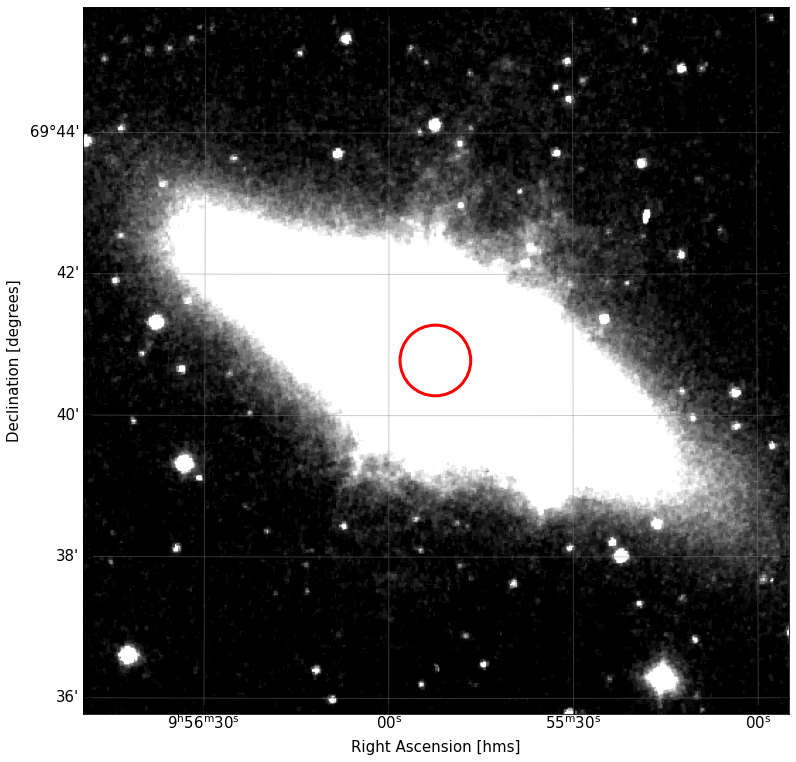
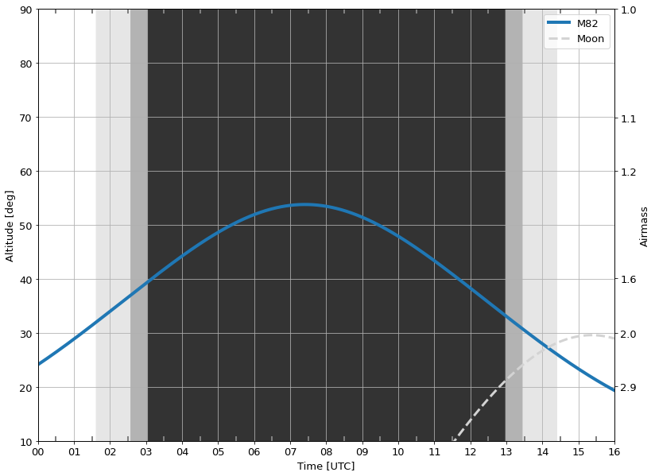

Observing-Suite
Contents
Observing-Suite¶
A suite of tools for planning and carrying out astronomical observations, building on astropy and inspired by astroplan.
This package is built around three core classes: Target(), where one specifies astronomical targets and various configurations of desired target, ObservingPlan(), which ingests a target list, sets up the observatory and nights of observation, creates beautiful html observing plans (with airmass plots, finder charts, etc) and exports observatory-ready target lists for all unique configurations, and ObservingLog(), which spawns an easy to use, but highly flexible, html entry tool that saves an observing log during the night.
Numerous convenience functions exist at each stage: my goal is to make it as easy as possible for me (and others) to set up complex observing runs yet keep track of everything. Some elements of this package are made better with instrument specific and observatory specific information. For now, Keck Observatory and Palomar Observatory are the two “most supported”. I’ll happily add more if people are interested and can provide, e.g., the template for that observatory’s targetlist.
Dependencies¶
Use of the observing-suite relies on the following
numpy
matplotlib
astropy
pandas
photutils
astroquery
Usage¶
Below, I demonstrate some of the basic usage of the tool.
The Target() Class¶
Our observing plan (later on) is going to ingest a list of Targets. Let’s go ahead and define one, and see what convenience functions exist. As a note, if your observations are in the vicinity of a known (i.e., resolvable by Simbad) source, you can simply enter the name, leaving the parse_name argument to True:
from observing_suite import Target, ObservingPlan
m82 = Target('M82')
With our target defined, we also have a set of coordinates that are accessible (this worked because the resolved name provided the coordinates).
m82.coordinates.to_string()
'148.968 69.6797'
The coordinates are standard astropy.coordinates.SkyCoord objects. Naturally, you can provide SkyCoord objects directly into the Target class:
from astropy.coordinates import SkyCoord
import astropy.units as u
target_coord = SkyCoord('148.152 70.1215',unit='deg')
custom_target = Target(name='my galaxy',coordinates=target_coord,parse_name=False)
And finally, Target() provides the ability to supply coordinates without invoking SkyCoord directly. You can pass a string of coordinates (ra and dec), along with the keyword argument coord_units, which get fed to SkyCoord.
final_target = Target(name='final_galaxy',coordinates='147.225 68.4242',coord_units=(u.deg,u.deg),parse_name=False)
In this case, I’ve demonstrated you can pass coord_units as a tuple of astropy.Quantity objects, but in this case, the string 'deg' would’ve been fine too.
Also notice that I’ve given these Targets names — this will allow us to display and organize our targets moving forward.
Adding Configurations¶
Every Target must have at least 1 valid configuration. A configuration refers to a specific way in which this object will be observed. One can add as many configurations as desired, which can be useful if, for example, you wish to perform spectroscopy on a target with varying PA angles or slit widths or gratings, or image a source in different filters.
Let’s add a configuration now. The most basic form of configuration doesn’t specify any additional parameters:
m82.add_configuration(config_name='primary')
Notice that we also name our configurations, which will matter later for organization. At any time, we can visualize the configurations we’ve defined by the attribute
m82.configurations
| obstype | coordinates | |
|---|---|---|
| configurations | ||
| primary | --- | 148.968 69.6797 |
or by running the explicit method
m82.list_configurations()
| obstype | coordinates | |
|---|---|---|
| configurations | ||
| primary | --- | 148.968 69.6797 |
The configurations are visualized using pandas.DataFrames, and you can take these frames and work with them as you wish. However, note that the DataFrame is only a view of your configurations, and modifying the returned frame doesn’t modify your underlying configurations.
We can notice here that this configuration has an obstype (unfilled), and coordinates, which were automagically set — because we didn’t specify any here, and the target itself had coordinates defined, they were pulled from there. It would’ve been None if we had initialized our Target without any coordinates (e.g., by supplying a non-parsed name and not providing coordinates).
The configurations are supposed to be as flexible as possible, but certain special keywords also unlock special convenience functions. Let’s re-do our primary configuration with some more flair:
m82.add_configuration(config_name='primary',
obstype='spectroscopy',
slit_length=128*u.arcsec,
slit_width=1.5*u.arcsec,
PA=60*u.deg)
Config Name primary already a configuration. Overwrite? [Enter yes, N for no]:
Notice that we got a nice warning about overwriting our previous configuration with the same name!
m82.configurations
| obstype | coordinates | slit_length | slit_width | PA | |
|---|---|---|---|---|---|
| configurations | |||||
| primary | spectroscopy | 148.968 69.6797 | 128.0 arcsec | 1.5 arcsec | 60.0 deg |
We now have a more interesting configuration set for our “primary” configuration. I want to stress that the add_configuration() method will allow you to add any number of extra keywords and values, which will then be stored and accesible. So whatever quick-look info is useful to your observations, you should add.
Let’s add a secondary configuration:
m82.add_configuration(config_name='secondary',
obstype='spectroscopy',
slit_length=128*u.arcsec,
slit_width=4*u.arcsec,
PA=120*u.deg)
m82.configurations
| obstype | coordinates | slit_length | slit_width | PA | |
|---|---|---|---|---|---|
| configurations | |||||
| primary | spectroscopy | 148.968 69.6797 | 128.0 arcsec | 1.5 arcsec | 60.0 deg |
| secondary | spectroscopy | 148.968 69.6797 | 128.0 arcsec | 4.0 arcsec | 120.0 deg |
We now have a new configuration, specifying new slit width and PA. Nothing stops us from adding unique columns that only apply to some configurations:
m82.add_configuration(config_name='tertiary',
obstype='fiber spectroscopy',
fiber_radius=30*u.arcsec)
m82.configurations
| obstype | coordinates | slit_length | slit_width | PA | fiber_radius | |
|---|---|---|---|---|---|---|
| configurations | ||||||
| primary | spectroscopy | 148.968 69.6797 | 128.0 arcsec | 1.5 arcsec | 60.0 deg | --- |
| secondary | spectroscopy | 148.968 69.6797 | 128.0 arcsec | 4.0 arcsec | 120.0 deg | --- |
| tertiary | fiber spectroscopy | 148.968 69.6797 | --- | --- | --- | 30.0 arcsec |
This time, I’ve assumed we have a fiber with a radius, rather than a slit with a length and width.
People familiar with faint object spectroscopy will be familiar with the concept of an offset star. You align on this (visible) source, and execute a blind offset to the target (hoping you got it right).
We provide the functionality to add an offset star for any configuration, and the code will also calculate our offsets:
m82.add_offset_star(coordinate='148.928 69.6897',
coord_units='deg',
configurations='all')
m82.configurations
| obstype | coordinates | slit_length | slit_width | PA | offset star | offsets | fiber_radius | |
|---|---|---|---|---|---|---|---|---|
| configurations | ||||||||
| primary | spectroscopy | 148.968 69.6797 | 128.0 arcsec | 1.5 arcsec | 60.0 deg | 148.928 69.6897 | 50.580 arcsec'' E, -35.973 arcsec'' N | --- |
| secondary | spectroscopy | 148.968 69.6797 | 128.0 arcsec | 4.0 arcsec | 120.0 deg | 148.928 69.6897 | 50.580 arcsec'' E, -35.973 arcsec'' N | --- |
| tertiary | fiber spectroscopy | 148.968 69.6797 | --- | --- | --- | 148.928 69.6897 | 50.580 arcsec'' E, -35.973 arcsec'' N | 30.0 arcsec |
I’ve supplied the coordinates for our offset star, which in this case can be applied to all configurations, because all our configurations have the same coordinates. But if you have different specific coordinates for each configuration, it would calculate the offsets from that star to each. You can also specify to add offsets only to one, or some, configurations (via a string name, or a list of string names of configurations).
Removing and Editing Configurations¶
There are some convenience methods to allow you to remove_configuration(config_name) and edit_configuration(config_name,property,value) which are pretty self-explanatory. Editing is not super useful — you might as well change and readd (overwrite) your entry for that configuration.
Retrieving Finder Charts¶
We can retrieve a DSS image (finder chart) for any configuration which has coordinates defined.
%matplotlib inline
m82.retrieve_finder_chart(config_name='primary',
size=10*u.arcmin,
show_aperture=False);
WARNING: AstropyDeprecationWarning: The truth value of a Quantity is ambiguous. In the future this will raise a ValueError. [astropy.units.quantity]

In relieving news, M82 appears! Notice I set a specific keyword to not show aperture. What was that about?
m82.retrieve_finder_chart(config_name='primary',
size=10*u.arcmin);
WARNING: AstropyDeprecationWarning: The truth value of a Quantity is ambiguous. In the future this will raise a ValueError. [astropy.units.quantity]

When we have a configuration that has the special keywords slit_width, slit_length and PA defined, we can use this to overplot our slit onto our finder chart.
The same is true for the fiber / circular aperture, because we set fiber_radius:
m82.retrieve_finder_chart(config_name='tertiary',
size=10*u.arcmin);
WARNING: AstropyDeprecationWarning: The truth value of a Quantity is ambiguous. In the future this will raise a ValueError. [astropy.units.quantity]

Adding Custom Imaging¶
The final convenience function to cover here is that if you have your own image of your target (maybe from your own telescope) and you wish to add it to your configuration, you can do so with the add_custom_image() method. (See the API for more).
Summary¶
So far, we’ve covered the Target() class and how to define targets and set configurations with any number of quantities of interest to us. We also covered a few of the convenient functions we can apply directly onto Targets. Most of these come together in our next part: ObservingPlan().
Observing Plans¶
Once we have our targets and their configurations set up as desired, we can ingest these into an observing plan. To do so, we’ll need to initialize an ObservingPlan object with a list of our Targets as well as the dates of our observations and the location they will be at. To make things more interesting, let’s define a second target:
m101 = Target('M101')
m101.add_configuration(config_name='on-target',
obstype='spectroscopy',
PA = -120*u.deg,
slit_length=128*u.arcsec,
slit_width=2*u.arcsec)
targets = [m82,m101]
plan = ObservingPlan(targets,
observatory='Palomar',
obsdates='2022-02-25',
utcoffset=-8)
Above, we’ve set up an ObservingPlan with our targets. We’ve specified our observatory as Palomar. Any Observatory in the astropy database can be used, or, if you have a custom location, you can easily setup an astropy EarthLocation() object (which takes a latitude, longitude, and altitude). This can also be directly added.
I’ve also set the obsdates params. In this case, I provided a single string, but a list of similar strings can be added to put in an observing run. Though if you have different targets for each night, you may wish to separate those out. Finally, we specify the utc offset of the observatory… there’s probably a way for me to automate this, but for now just do it.
Altitude / Airmass Plot¶
Immediately upon making our plan, we have access to a useful method.
plan.plot_visibility('2022-02-25');

By default, this plot will show each target as well as the moon. It shows your standard nighttime, 18 degree twilight, and 12 degree twilight lines. Here’s an example of some of the keywords:
plan.plot_visibility('2022-02-25',target='M82',view_range=8,figsize=(13,10));

So we can set the range (about midnight) that gets shown, we can specify individual targets (or provide a list of targets as strings), and manually set the figure size.
Observing Plan HTML Output¶
The first major thing we can do with our observing plan is, in essence, have it loop over all our targets and put together a unified observing guide which has the full visibility plot, then for each target, shows its visibility plot, its configurations, and its finder images.
This stage is still under construction, but is (marginally) functional, via
plan.html_summary('2022-02-25',save_dir='./');
Which will create a folder for that date, and within make the html (and an img folder for the plots).
You can see an example of this in the Examples/ folder.